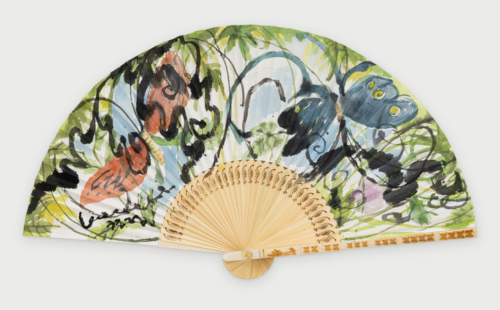

Lucky Moments: Gifts from Nature행운의 찰나: 자연이 건네는 선물

Pale green and green leaves grow thick across the fan, and between them stems of black ink tangle and spread without any rule. From the left flies a brown butterfly, and from the right a deep blue one with yellow-spotted wings. I caught each moment of their resting and moving as if pressing a "lucky shutter." Robert Walser wrote that one who walks must look with love upon even the smallest living things: a child, a dog, a tiny insect, a butterfly, a sparrow, a flower. Luck is not far away. Lower your eyes, and it is everywhere. May these small gifts from nature ride the breeze of the fan and spread far and wide.
연둣빛과 초록 잎사귀가 부채 가득 무성하고, 그 사이로 검은 먹선의 줄기들이 규칙 없이 엉키며 뻗어 나간다. 왼쪽에서는 갈색 나비가, 오른쪽에서는 노란 점 박힌 날개의 검푸른 나비가 날아든다. 나는 이들이 머물고 움직이는 순간을 '행운의 셔터'를 누르듯 붙잡았다. 로베르트 발저는 산책하는 사람이라면 아이와 개, 작은 벌레와 나비, 참새와 꽃처럼 가장 작은 생명까지 사랑으로 바라보아야 한다고 했다. 행운은 멀리 있지 않다. 눈을 낮추면 어디에나 있다. 자연이 건네는 그 작은 선물들이 부채의 바람을 타고 널리 퍼져 나가기를.